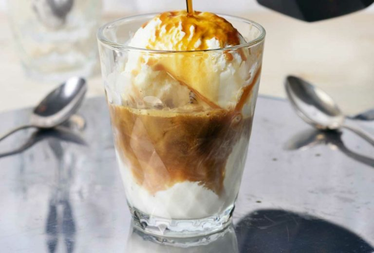

Bem-vindo ao Sweet Coffee! Nossa história começa com uma paixão genuína por café e pela experiência única de cada xícara. Criamos um ambiente acolhedor, onde você pode saborear cafés de qualidade, feitos com grãos selecionados e preparados com todo o carinho.
Nossa História ☕
A ideia de abrir o Sweet Coffee nasceu do desejo de compartilhar a verdadeira essência do café. Acreditamos que café é mais do que uma bebida – é uma arte, e estamos aqui para oferecer a melhor experiência possível, desde o grão até a xícara.
A Paixão pelo Café 😍
Escolhemos apenas os melhores grãos de fazendas sustentáveis, trazendo cafés especiais e receitas autorais para surpreender o seu paladar. Cada detalhe importa, e nossa equipe é dedicada a oferecer um café de qualidade, seja no local ou via delivery.

Sustentabilidade e Ingredientes Frescos
Trabalhamos com fornecedores locais e priorizamos ingredientes frescos e orgânicos. Nosso compromisso é com a qualidade e o respeito ao meio ambiente, oferecendo uma experiência autêntica e responsável.

Nosso Compromisso com Você
Mais do que café, oferecemos momentos especiais. Nosso atendimento é personalizado, e queremos que você se sinta em casa. Seja na loja ou no conforto da sua casa com nosso delivery, o Café da Esquina está sempre pronto para te surpreender.